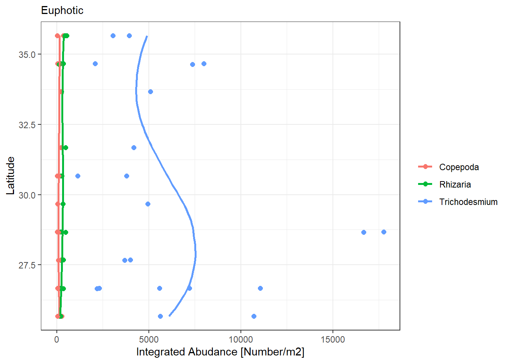
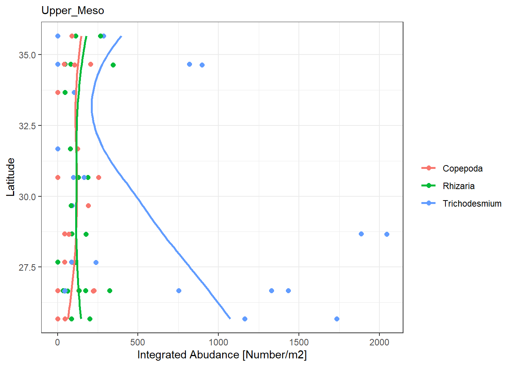
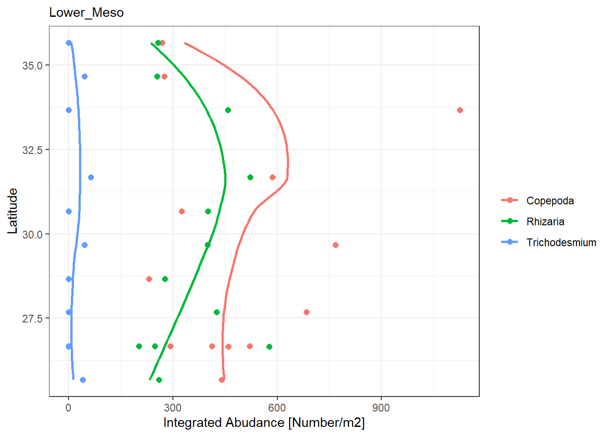
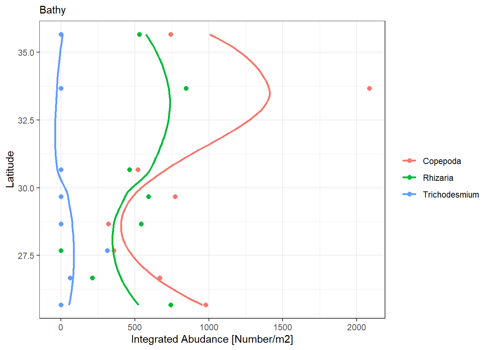

Analysis of UVP data along a transect
How does abundance change along the transect?
1 - We need to load in and parse through the data
We need to first import the data and select the core information that we need. The UVP project folder has all the casts we want and then some. We only want the BATS Validation cruise - bv57. We’ll need to remove the hs casts.
Setting up the requisites
Importing data and trimming list to keep only bv casts
uvp_dat <- ecopart_import("~/BV_transect_export") #load in initial ecopart object
# we need to trim out the hs casts
# One way to do that would be to hard-code indices for those but that's not reliable
#So I'm using regex
#get index of hs data for both par and zoo files
hs_index_par <- grep("hs",names(uvp_dat$par_files))
hs_index_zoo <- grep('hs', names(uvp_dat$zoo_files))
uvp_dat$par_files <- uvp_dat$par_files[-hs_index_par]
uvp_dat$zoo_files <- uvp_dat$zoo_files[-hs_index_zoo]2 - Identifying the meta-data
We want to now get a little idea of the data that we have. The main questions we have are how many locations are at each site, which are day vs night, and how deep does each cast go?
First, let’s look at the time of day for these casts
All these data are in the meta file. Something to keep in mind is that UVP time is recorded in UTC - so you need to get sunrise/sunset times from NOAA’s Solar Calculator. I’m not super precise with it, I just go with the month at longitude.
# I'm writing a function for myself for later
get_time <- function(full_date) {
time_stamp <- sapply(strsplit(as.character(full_date)," "),
`[[`,2)
return(as.POSIXct(time_stamp, format = '%H:%M:%S'))
}
#my function above will just get the time and set it to todays date but that is fine
uvp_dat$meta$time_of_day <- sapply(get_time(uvp_dat$meta$sampledate), timeOfDay,'10:18:00','21:48:00',1) #this will add time of day to our metadata fileThere’s actually very few night casts, let’s just go with the day casts then for this project.
Now we want to check the max-depth for all our casts
# a quick funciton to find max depth
get_max_d <- function(zoo_file) {
max_d <- zoo_file$depth_including_offset[which.max(zoo_file$depth_including_offset)]
return(max_d)
}
max_d <- rep(NA, length(uvp_dat$zoo_files))
for(i in 1:length(uvp_dat$zoo_files)) {
max_d[i] <- get_max_d(uvp_dat$zoo_files[[i]])
}
depth_tibble <- tibble(profileid = names(uvp_dat$zoo_files),
max_d = max_d)
uvp_dat$meta <- as_tibble(merge(uvp_dat$meta,
depth_tibble))
tibble(Profile_id = uvp_dat$meta$profileid,
lat = uvp_dat$meta$latitude,
tod = uvp_dat$meta$time_of_day,
max_d = uvp_dat$meta$max_d)# A tibble: 21 x 4
Profile_id lat tod max_d
<chr> <dbl> <chr> <dbl>
1 bv57c1 30.7 day 499
2 bv57c10 26.7 day 1206.
3 bv57c11 26.7 night 1206.
4 bv57c12 27.7 day 489
5 bv57c13 27.7 day 5422.
6 bv57c14 29.7 day 4992.
7 bv57c15 31.7 night 4612.
8 bv57c16 33.7 day 4830.
9 bv57c17 35.7 day 502.
10 bv57c18 35.7 day 4366.
# ... with 11 more rowsLooking at this data, we have several casts going to at least 500m, some going to 1200m, and several going to 5000m. So what we can do is look at four ocean regions - epipelagic (0-200), upper mesopelagic (200-500), lower mesopelagic (500 - 1200), bathypelagic (1200 - 4000).
Next steps will be to calculate concentration for each profile, then look at integrated densities. But first we need to rename our data to core taxonomic groups.
First let’s look at which taxonomic categories we have:
list_taxa <- function(uvp_dat) {
tdf <- do.call(rbind, uvp_dat$zoo_files)
return(tdf$name)
} #should add name column option
cbind(names(table(list_taxa(uvp_dat))),
table(list_taxa(uvp_dat)) / length(list_taxa(uvp_dat))) [,1] [,2]
Acantharea "Acantharea" "0.00176489464113809"
Actinopterygii "Actinopterygii" "0.00032088993475238"
Alciopidae "Alciopidae" "0.00016044496737619"
Amphipoda "Amphipoda" "0.000106963311584127"
Annelida "Annelida" "5.34816557920633e-05"
Aulacantha "Aulacantha" "0.00304845438014761"
Aulacanthidae "Aulacanthidae" "0.00534816557920633"
Aulographis "Aulographis" "0.00016044496737619"
Aulosphaeridae "Aulosphaeridae" "0.00235319285485079"
badfocus<artefact "badfocus<artefact" "0.169643812172425"
badfocus<Copepoda "badfocus<Copepoda" "0.000106963311584127"
bubble "bubble" "0.0251363782222698"
Calanoida "Calanoida" "0.00165793132955396"
Castanellidae "Castanellidae" "0.000588298213712697"
Chaetognatha "Chaetognatha" "0.00139052305059365"
Cnidaria<Hydrozoa "Cnidaria<Hydrozoa" "0.0010161514600492"
Cnidaria<Metazoa "Cnidaria<Metazoa" "0.00123007808321746"
Coelodendridae "Coelodendridae" "0.000695261525296823"
Coelodendrum "Coelodendrum" "0.00032088993475238"
Coelographis "Coelographis" "0.000534816557920633"
Collodaria "Collodaria" "0.00096266980425714"
colonial<Aulosphaeridae "colonial<Aulosphaeridae" "5.34816557920633e-05"
colonial<Rhizaria "colonial<Rhizaria" "0.00256711947801904"
Copepoda "Copepoda" "0.0215531072842015"
Crustacea "Crustacea" "0.00064177986950476"
Ctenophora X "Ctenophora X" "0.000106963311584127"
Ctenophora<Metazoa "Ctenophora<Metazoa" "0.000106963311584127"
darksphere "darksphere" "0.115787784789817"
Decapoda "Decapoda" "5.34816557920633e-05"
detritus "detritus" "0.140763718044711"
Diatoma "Diatoma" "5.34816557920633e-05"
duplicate "duplicate" "0.000106963311584127"
Echinodermata "Echinodermata" "5.34816557920633e-05"
Eucalanidae "Eucalanidae" "0.000695261525296823"
Eumalacostraca "Eumalacostraca" "0.00112311477163333"
feces "feces" "0.0182907262808857"
fiber<detritus "fiber<detritus" "0.0403786501230078"
Foraminifera "Foraminifera" "0.00112311477163333"
house "house" "0.00310193603593967"
Hydrozoa "Hydrozoa" "0.00048133490212857"
light<detritus "light<detritus" "0.117392234463579"
living< "living<" "0.00438549577494919"
Medusettidae "Medusettidae" "0.000106963311584127"
Ostracoda "Ostracoda" "0.00117659642742539"
other<living "other<living" "0.00080222483688095"
Phaeodaria "Phaeodaria" "0.000855706492673013"
Polychaeta "Polychaeta" "5.34816557920633e-05"
Pteropoda "Pteropoda" "0.00016044496737619"
puff "puff" "0.0326772916889507"
Rhizaria "Rhizaria" "0.00208578457589047"
Rhizaria X "Rhizaria X" "0.00149748636217777"
Salpidae "Salpidae" "0.000267408278960317"
Siphonophorae "Siphonophorae" "0.000695261525296823"
solitaryblack "solitaryblack" "0.000106963311584127"
solitaryglobule "solitaryglobule" "0.00272756444539523"
temp circle "temp circle" "0.00475986736549364"
Tomopteridae "Tomopteridae" "0.000588298213712697"
tuff "tuff" "0.265910792598139"
Tuscaroridae "Tuscaroridae" "0.000106963311584127"From this, let’s look at: Rhizaria, Copepods, Trichodesmium, Chaetognath, Annelida, Eumalacostraca. One issue we want to correct is that darksphere is classified as living and we want to change that to be non-living
names <- c('living', "Rhizaria","Copepoda","Trichodesmium",
"Chaetognatha",'Annelida',"Eumalacostraca",'not-living','darksphere')
uvp_dat <- uvp_dat %>%
add_zoo(names_to, 'name', names, suppress_print = T)
darksphere_switch <- function(zoo_file) {
new_name <- zoo_file$name
new_name[which(new_name == 'darksphere')] <- 'not-living'
return(new_name)
}
uvp_dat <- add_zoo(uvp_dat, darksphere_switch, 'name')
tibble(names(table(list_taxa(uvp_dat))),
table(list_taxa(uvp_dat)) / length(list_taxa(uvp_dat)))# A tibble: 8 x 2
`names(table(list_taxa(uvp_dat)))` `table(list_taxa(uvp_dat))/length(list_ta~`
<chr> <table>
1 Annelida 0.0008557065
2 Chaetognatha 0.0013905231
3 Copepoda 0.0240132635
4 Eumalacostraca 0.0012835597
5 living 0.0194673227
6 not-living 0.6273933041
7 Rhizaria 0.0270082362
8 Trichodesmium 0.2985880843 3 - Calculating the concentration & Integrating
We now want to calculate the concentration of different taxa. We’ll do this in 20m bins.
conc_list <- vector('list',length(uvp_dat$zoo_files))
names(conc_list) <- names(uvp_dat$zoo_files)
for(i in 1:length(conc_list)) {
conc_list[[i]] <- uvp_conc(uvp_dat,names(conc_list)[i],seq(0,max(uvp_dat$zoo_files[[i]]$depth_including_offset),20))
conc_list[[i]]$mp <- get_bin_limtis(conc_list[[i]]$db)$mp
}With this, we can now want the integrated abundance for our four ocean zones. We’ll set up a holder shell first. Then fill it out with needed information about each cast which goes into it. We’ll reference the meta data folder a lot for this:
intg_abund <- vector('list', 4)
names(intg_abund) <- c('euphotic','upper_meso',
'lower_meso','bathy')
#a function I might use later
#' @param max_d a vector of max_depths corresponding to casts
#' @param depth_breaks numeric vector with zone limits
#' @param zone_labels character vector of names for lower limits
assign_zones <- function(max_d, depth_breaks, zone_labels) {
if(length(depth_breaks) != length(zone_labels)) {
stop('depth_breaks and zone_labels must be equal length')
}
d_match <- sapply(max_d, nearest, depth_breaks)
zones <- zone_labels[match(d_match, depth_breaks)]
return(zones)
}
uvp_dat$meta$zone <- sapply(uvp_dat$meta$max_d, assign_zones,
c(500,1200,4000),
c(2,3,4))
for(i in 1:length(intg_abund)) {
intg_abund[[i]]$d_lim <- c(0,200,500,1200,4000)[c(i, i+1)]
intg_abund[[i]] <- c(intg_abund[[i]], vector('list', 5))
names(intg_abund[[i]]) <- c('d_lim','Trichodesmium','Rhizaria',
'Eumalacostraca','Copepoda', 'Chaetognatha')
for(j in 2:length(intg_abund[[i]])) {
intg_abund[[i]][[j]]$profile_id <- uvp_dat$meta$profileid[which(uvp_dat$meta$zone >= i)]
}
}Now we have a list shell set up to integrate abundance for each of our taxa of interest in each zone. This will be a fairly large loop since we’re iterating the process many times over. This is definitely the quick and dirty way to get things done. In the future I might want to build out functions for each of these tasks then apply them to each individual taxa
#ugly functions to avoid ridiculous looping
subset_taxa <- function(df, taxa) {
rdf <- df[df$taxa == taxa,]
return(rdf)
}
subset_d <- function(df, d_lower, d_upper) {
rdf <- df[df$mp > d_lower &
df$mp < d_upper, ]
return(rdf)
}
org_loop <- function(df, lim_list) {
intg <- trapz_integarate(df$mp, df$conc_m3,
lim_list$d_lim[1], lim_list$d_lim[2],
subdivisions = 500)
return(intg$value)
}
nrow_check <- function(df) {
if(nrow(df) == 0) {
return(FALSE)
} else {
return(TRUE)
}
}
for(i in 1:length(intg_abund)) {
for(j in 2:length(intg_abund[[i]])) {
temp_conc_list <- lapply(conc_list, subset_taxa, names(intg_abund[[i]])[j])
temp_conc_list <- lapply(temp_conc_list, subset_d, intg_abund[[i]]$d_lim[1], intg_abund[[i]]$d_lim[2])
temp_conc_list <- temp_conc_list[which(names(temp_conc_list) %in% intg_abund[[i]][[j]]$profile_id)]
if(any(!(sapply(temp_conc_list,nrow_check)))) {
drop <- which(!(sapply(temp_conc_list,nrow_check)))
temp_conc_list <- temp_conc_list[-drop]
intg_abund[[i]][[j]]$profile_id <- intg_abund[[i]][[j]]$profile_id[-drop]
}
intg_taxa <- sapply(temp_conc_list, org_loop, intg_abund[[i]])
intg_abund[[i]][[j]]$num_m2 <- as.numeric(intg_taxa[match(names(intg_taxa),intg_abund[[i]][[j]]$profile_id)])
}
}Great! Now we have a big set of data with integrated abundances in each four depth zone. Now all we have to do is plot them according to their latitudes. Looking at the data however, it seems that we have really limited data for Eumalacostraca and Chaetognatha. So let’s just look at Copepods, Rhizaria, and Trichodesmium.
4 - Plotting our data
Before we plot the data, it is nice to get everything into a clean plotting dataframe. I’m thinking that it’ll be best to plot all three taxa on panels based on the depth
#set the taxa we are intested in plotting
plot_taxa <- c('Trichodesmium', 'Rhizaria', 'Copepoda')
mush_into_df <- function(obj) {
rdf <- as.data.frame(obj[[1]])
rdf$taxa <- rep(names(obj), nrow(rdf))
return(rdf)
}
plot_list <- vector('list', 4)
names(plot_list) <- c('Euphotic', 'Upper_Meso','Lower_Meso','Bathy')
for(i in 1:length(plot_list)) {
for(j in 1:length(intg_abund[[i]][plot_taxa])) {
plot_list[[i]][[j]] <- mush_into_df(intg_abund[[i]][plot_taxa[j]])
}
plot_list[[i]] <- do.call(rbind, plot_list[[i]])
plot_list[[i]] <- merge(plot_list[[i]],
data.frame(profile_id = uvp_dat$meta$profileid,
lat = uvp_dat$meta$latitude))
}Great! Now everything is all set up for us to plot our figures based on latitude
plot_output <- vector('list', 4)
for(i in 1:length(plot_output)) {
plot_list[[i]] <- plot_list[[i]][!is.na(plot_list[[i]]$num_m2),]
plot_output[[i]] <- ggplot(plot_list[[i]],aes(y = num_m2, x = lat, col = taxa)) +
geom_point(size = 2) +
geom_smooth(se = F, method = 'loess',
size = 1, alpha = .05, span = 1)+
coord_flip()+
labs(x = 'Latitude', y = 'Integrated Abudance [Number/m2]',
subtitle = names(plot_list)[i],
col = "")+
theme_bw()
}
print(plot_output)[[1]]`geom_smooth()` using formula 'y ~ x'
[[2]]`geom_smooth()` using formula 'y ~ x'
[[3]]`geom_smooth()` using formula 'y ~ x'
[[4]]`geom_smooth()` using formula 'y ~ x'
Cool we have some figures to start working with. I’m saving a bit of data to and providing here. It is an RDS so to load it you just type readRDS(‘filename.rds’).
saveRDS(plot_list, './item01_integrated-abundances-by-zone')